Pierwszy kontakt z prawdziwą magią
Przejść bezpośrednio do arkusza kalkulacyjnego znajdującego się w aplikacji Teams -> Zespoły -> Nietypowe ustawienia
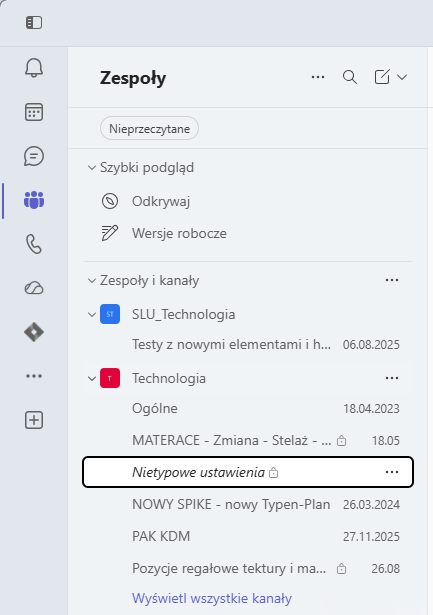
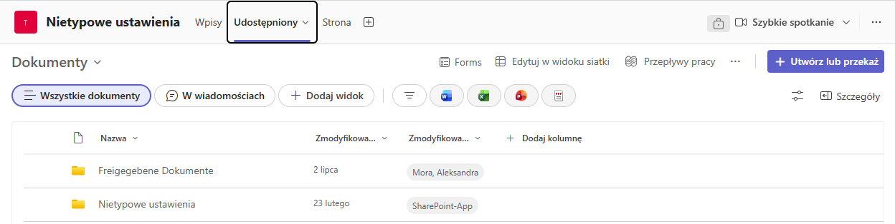
Stamtąd przejdź do folderu „Niestandardowe układy”, a tam zobaczysz plik arkusza kalkulacyjnego o tej samej nazwie, kliknij go prawym przyciskiem myszy i wybierz opcję otwarcia go w aplikacji.
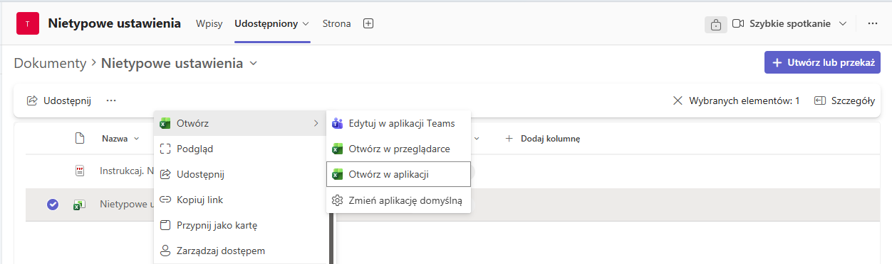
Po otwarciu pliku znajdź pierwszą pustą komórkę w kolumnie B (o nazwie TA) i kliknij ją, a następnie naciśnij Ctrl + V, aby wkleić skopiowane dane.
Ważne! Wklejaj dane tylko tuż pod ostatnio używaną komórką, w przeciwnym razie skrypt nie będzie działał poprawnie i gwarantowane jest tylko jedno: niezdefiniowane zachowanie.
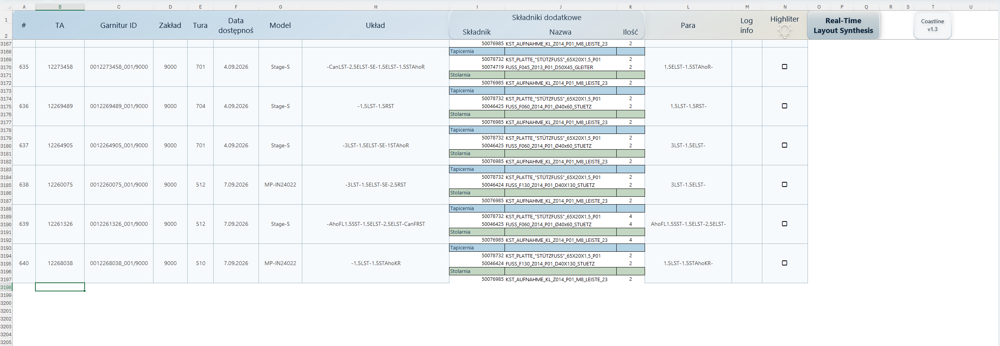
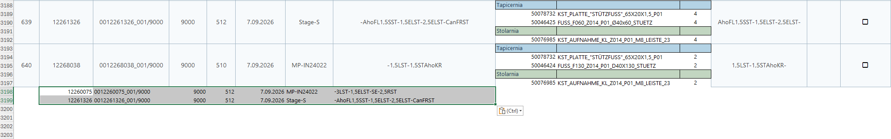
Precision Layout Engine
Wyszkolony do wykrywania par
Po pomyślnym wklejeniu danych naciśnij przycisk Real-Time Layout Synthesis i obserwuj magię
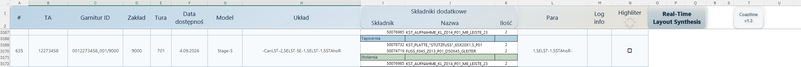
Pierwsza praca z generatorem PasteFlow Pro
Teraz, gdy to już zrobiliśmy, wprowadź numer pierwszego zamówienia sprzedaży do COHV
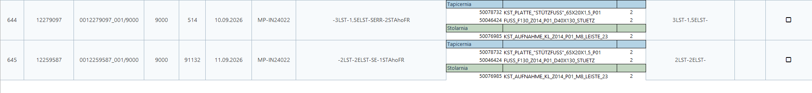
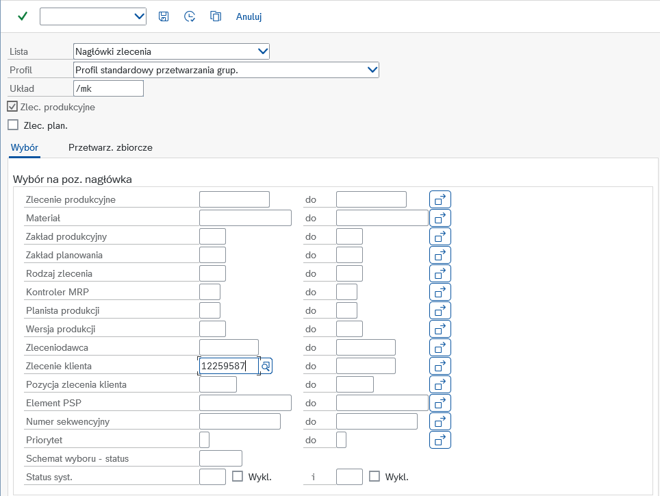
Podczas przeglądania szczegółowej listy nagłówków zamówień zlokalizuj MON (lub PAC_KDM dla modeli z PAC_KDM w których nogi ozdobne montowane przez klienta) elementu, który ma ozdobne nogi. Musimy je wyszukać, aby poznać wysokość nóg
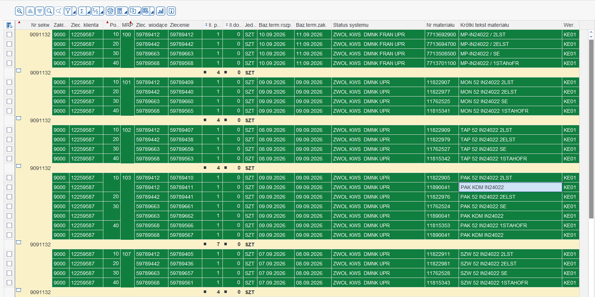
W tym przykładzie zobaczymy to dla 2LST. Wystarczy kliknąć raz na PAK KDM IN24022 pod PAK 52 IN24022 2LST i nacisnąć kolejno Ctrl + F2, a następnie F6. Następnie zobaczysz zlecenie produkcyjne w widoku listy części
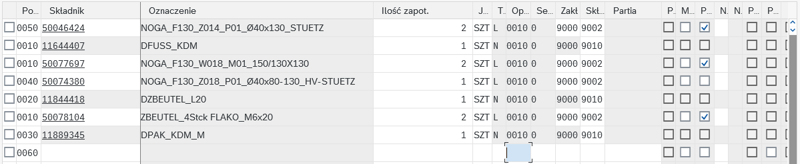
2LST ma wysokość nóg 130 mm. Pamiętając o tym, wróćmy do arkusza kalkulacyjnego i przekażmy te informacje do generatora PasteFlow Pro.
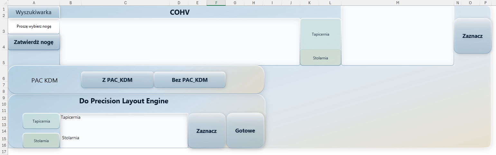
Zanim przejdziemy do pracy z generatorem PasteFlow Pro, powiem o nim kilka rzeczy.
Został on zaprojektowany z myślą o minimalizacji prawdopodobieństwa błędów i maksymalizacji bezpieczeństwa. Mając to na uwadze, generator PasteFlow Pro nie pozwoli rozpocząć pracy bez wybrania wysokości nóg. Następnie należy zatwierdzić wybraną nogę, wskazać, czy występuje PAC_KDM, w przeciwnym razie nie przejdzie dalej. Rozpocznie od działu tapicerskiego – i wskaże, gdzie wkleić dane, uwzględniając PAC_KDM, a następnie wybierze dane do skopiowania i wklejenia dla działu stolarskiego. Po czym można wybrać i skopiować dane do tabeli układów nietypowych. Ważne: podczas wklejania danych do tabeli układów nietypowych naciśnij Ctrl + Alt + V i wybierz opcję „Tylko wartości”.
Generator PasteFlow Pro w akcji
Teraz zobaczmy ten proces krok po kroku: Na początku generator jest pusty, nie mamy wybranej wysokości nogi
Wybierzmy więc wysokość nogi, którą sprawdziliśmy wcześniej (wynosi ona 130 mm)
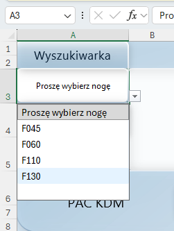
Po wybraniu odpowiedniej wysokości nóżki kliknij „Zatwierdź nogę”.
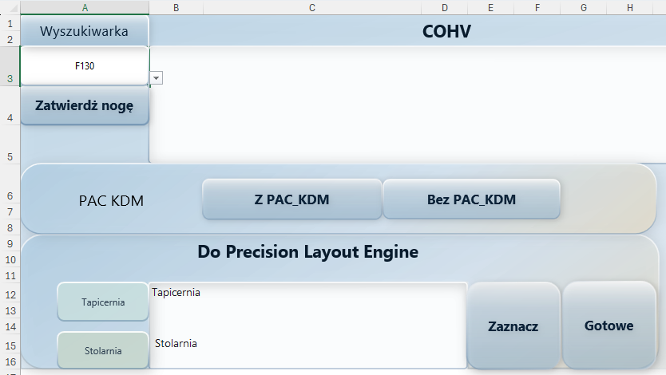
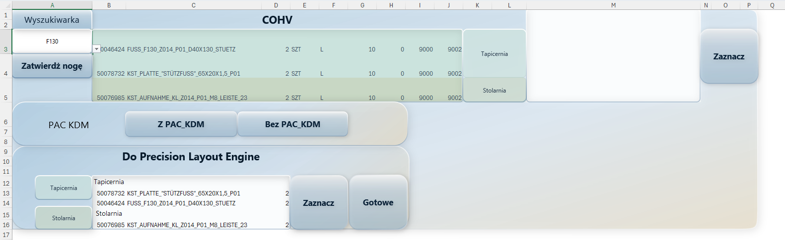
Następnie określ w PasteFlow Pro, czy zamówienie klienta obejmuje PAC_KDM, czy też nie. (Nash 2LST z PAC_KDM. Można to sprawdzić, sprawdzając PAK w COHV (jeśli nie ma PAK KDM – naciśnij Bez PAC_KDM w generatorze PasteFlow Pro).)
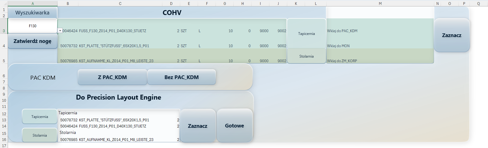
Naciśnij „Zaznacz”, a gdy tylko zobaczysz, że dany zakres został podświetlony, naciśnij Ctrl+C i przejdź do transakcji COHV (zwróć uwagę na wskazówki PastFlow Pro dotyczące miejsca wklejenia danych).
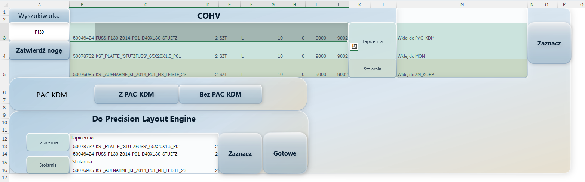
W transakcji COHV musisz wybrać odpowiednie miejsce do wklejenia danych skopiowanych z PasteFlow Pro (w
moim przypadku jest to pole PAK KDM, znajdujące się tuż pod polem 2LST).
Zaznacz odpowiedni wiersz w
transakcji COHV (jak pokazano na zrzucie ekranu), a następnie naciśnij Ctrl+F1 i F6 – te dwa skróty
przeniosą Cię bezpośrednio do drzewa zleceń w trybie edycji
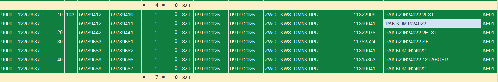
Teraz umieść kursor w pierwszej pustej komórce na dole i naciśnij Ctrl+V, aby wkleić skopiowane dane, a
następnie zatwierdź klawiszem Enter i naciśnij Ctrl+S, aby zapisać zmiany.
Na moim przykładzie widać,
że wklejony wiersz znajduje się na samej górze; wynika to z faktu, że po zatwierdzeniu operacji
klawiszem Enter system SAP stosuje własne zasady sortowania, przez co wiersz ten trafia na górę, a nie
na dół.
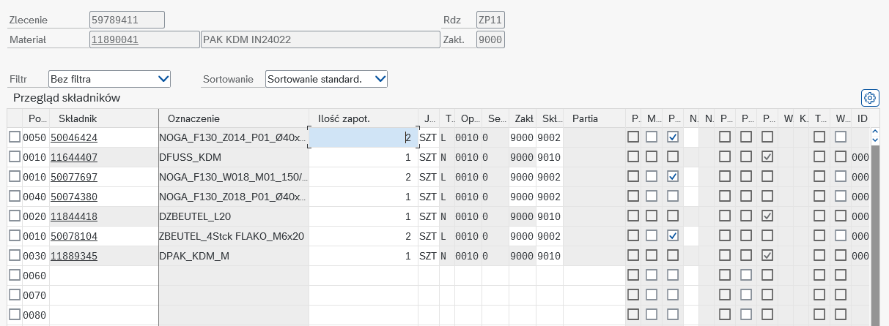
Teraz, gdy już to zrobiliśmy, powtórzmy te same kroki dla pozostałych: MON i ZM KORP (możesz nadal mieć wątpliwości, więc dla Twojej wygody zamieściłem krótki filmik)
I ostatnie kroki. Kliknij przycisk „Wybierz”, aby zaznaczyć zakres pod nagłówkiem "Do Precission Layout Engine", a następnie naciśnij Ctrl+C, aby go skopiować.
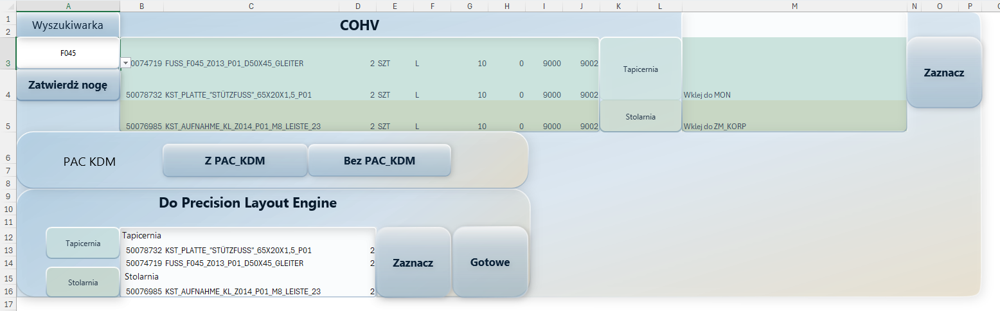
Teraz w zakładce Precision Layout Engine, w kolumnie Składniki dodatkowe, wybierz komórkę, naciśnij Alt+Ctrl+V i wybierz opcję wklejenia samych wartości (komunikat może wyglądać inaczej niż na moim zrzucie ekranu, jeśli używasz języka innego niż angielski).
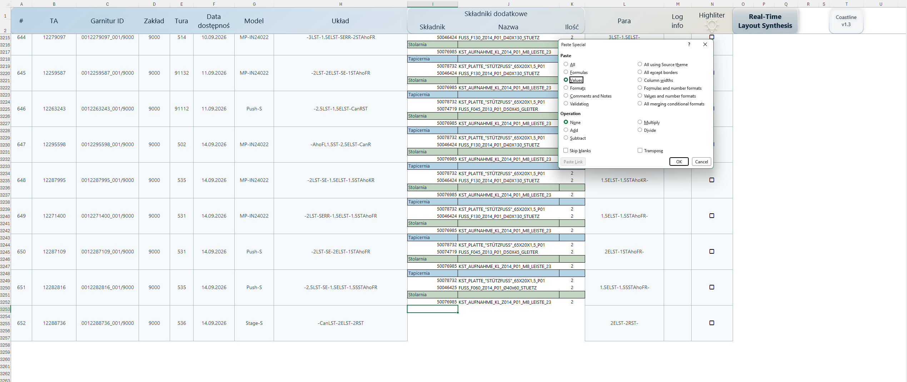
Po wklejeniu samych wartości wynik powinien wyglądać tak:
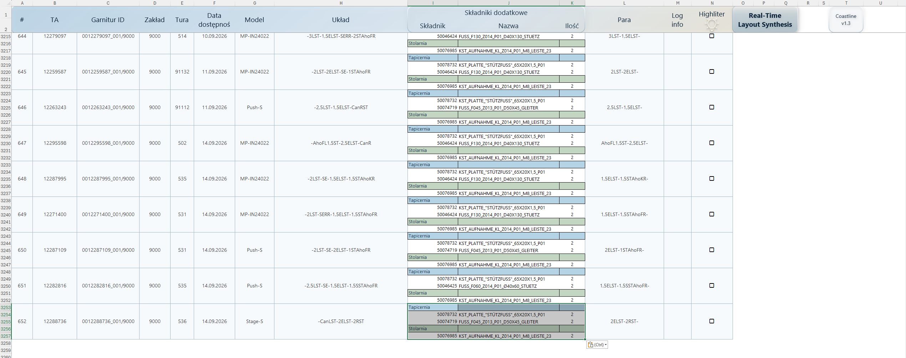
Wystarczy już tylko nacisnąć przycisk „Gotowe” (jest to konieczne, aby całość działała poprawnie).
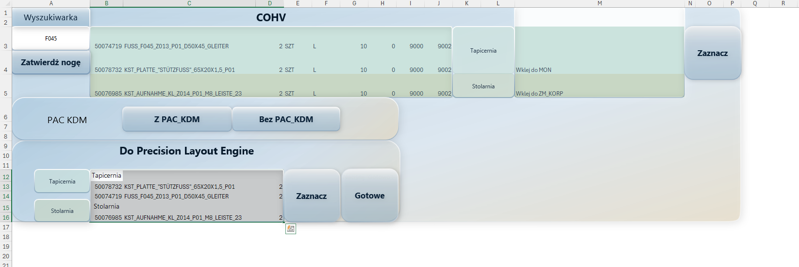
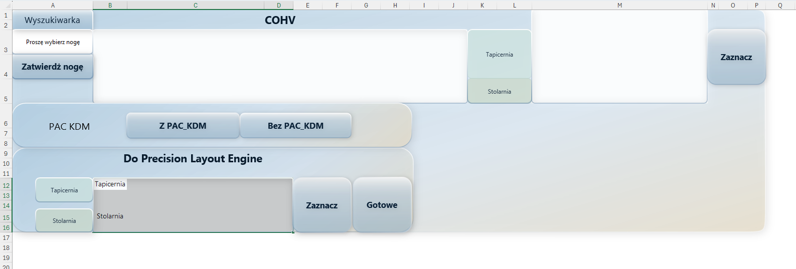